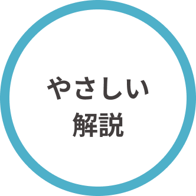
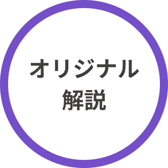
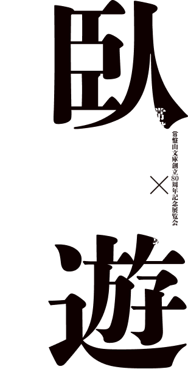

<!DOCTYPE html>
<head>
    <meta charset="UTF-8">
    <!-- CSS
    ================================================== -->
    <link rel="stylesheet" href="css/style.css">
    <link rel="stylesheet" href="css/works.css">
    <link href="https://use.fontawesome.com/releases/v5.6.3/css/all.css" rel="stylesheet">
    <link href="https://cdn.jsdelivr.net/npm/remixicon@2.2.0/fonts/remixicon.css" rel="stylesheet">
    <link rel="stylesheet" href="css/remix.css">
    <link href="https://fonts.googleapis.com/css2?family=Noto+Serif+JP:wght@600&display=swap" rel="stylesheet">
    <link href="https://fonts.googleapis.com/css2?family=Noto+Serif+JP:wght@900&display=swap" rel="stylesheet">
	<link href="https://fonts.googleapis.com/css2?family=Noto+Sans+JP:wght@300&display=swap" rel="stylesheet">
    <link href="https://fonts.googleapis.com/css2?family=Noto+Sans+JP:wght@500&display=swap" rel="stylesheet">


    <!-- script
    ================================================== -->
    <script src="js/jquery-3.2.1.min.js"></script>
    <script src="js/modernizr.js"></script>
    <script defer src="js/fontawesome/all.min.js"></script>
    <script src="js/changeLang.js"></script>
    <script src="https://cdnjs.cloudflare.com/ajax/libs/jquery-cookie/1.4.1/jquery.cookie.min.js"></script>
    <script src="https://ajax.googleapis.com/ajax/libs/jquery/3.3.1/jquery.min.js"></script>
    <script src="https://cdnjs.cloudflare.com/ajax/libs/jquery-cookie/1.4.1/jquery.cookie.min.js"></script>
    <script src="js/jquery.layerBoard.js"></script>
    
</head>


	
<!-- MAIN CONTENTS -->
<div class="footer-fixed">
<header>
    <div class="commonContent">
        
    </div>
    

</header>
    <div class="container">
        <div class="select">
            <div class="select-form-container"> 
                    <!--画像のボタンごとにformタグを用意する-->
                    <form action="guide.php" method="post" id="kigaru">
                        <input type="submit" name="select" alt="送信" value="easy">
                        
                    </form>
                    <form action="guide.php" method="post" id="fukaku">
                        <input type="submit" name="select" alt="送信" value="hard">
                        
                    </form>
            </div>
        </div>

        <div class="top_images">
            
            
        </div>
    </div>
    <h2>禅とは？</h2>  
     <div class="front_txt">
        禅宗は仏教の教派の一つで、その教えは釈迦に始まり、6世紀初め頃に、インドから中国へ渡来した達磨を始祖とします。
        達磨の標語の一つ「以心伝心」という言葉が示すように、経典に頼らず、師からの直接の教えを絶対的なものとし、具体的には坐禅や問答などの修行を重視しました。
        日本に禅宗が伝わったのは、鎌倉時代。中国から来日あるいは、中国へ留学した僧を通してもたらされました。

    </div>
     


<footer>
    <div class="box">
    <p style="font-size:40px;"><a href="https://twitter.com/museum_commons"><i class="ri-twitter-line"></i></a></p>
    <p style="font-size:40px;"><a href="https://instagram.com/museum.commons?utm_medium=copy_link"><i class="ri-instagram-line"></i></a></p>
    <p style="font-size:40px;"><a href="https://www.facebook.com/museum.commons/"><i class="ri-facebook-box-line"></i></a></p>
    </div>
    <p class="text-center"> 慶應ミュージアム・コモンズ<br> © 2022-2023 Keio University
    
</footer>
</div>   

	

<!-- Java Script -->
    <script src="js/plugins.js"></script>
	<script src="js/main.js"></script>

</body>
</html>